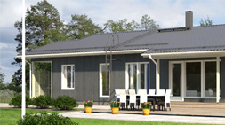
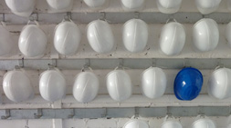
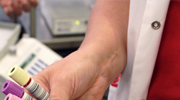

Solita
Palvelut
Asiakkaat
Yritys
Ajankohtaista
Ura
Yhteystiedot
Asiakkaat
Case Oikeushallinto
Suomalainen edunvalvonta tehokkaammaksi yhteisellä järjestelmällä
Lue lisää
Case Sponda
Dialogia sisäiseen ja ulkoiseen viestintään
Lue lisää
Case Ilmatieteen laitos
Neljännesmiljoonalle päivittäiselle käyttäjälle tietoa säästä verkossa
Lue lisää
Case Neot
Polttoainetoimitukset hallintaan öljyterminaalista asiakkaalle
Lue lisää

Case Kastelli
Verkkosivut ovat talovalmistajan tärkein palvelu- ja myyntikanava
Lue lisää
Case Elisa
Intranetin hakutoiminnon uudistaminen vauhdittaa myös asiakaspalvelua
Lue lisää

Case Helsingin kaupunki
Työsuojeludokumentoinnin sähköistämisellä tavoitellaan miljoonasäästöjä
Lue lisää
Case rakennusalalta
Jämäkkyyttä konserniohjaukseen
Lue lisää
Case elintarviketeollisuudesta
Automatisoitu raportointi tukee liiketoimintayksiköiden päätöksentekoa
Lue lisää
Case Lehtipiste
Toiminnanohjausjärjestelmä tehostaa irtonumeromyyntiä
Lue lisää

Case Suomen Punaisen Ristin Veripalvelu
Veripalvelu pysyy pulssilla
Lue lisää
Solita
Palvelut
Asiakkaat
Yritys
Ajankohtaista
Ura
Yhteystiedot
Solita Oy
Arkadiankatu 2
00100 Helsinki
Solita Oy
Satakunnankatu 18 A
33210 Tampere
puh. 03-389 1380
fax. 03-389 1381
contact(at)solita.fi